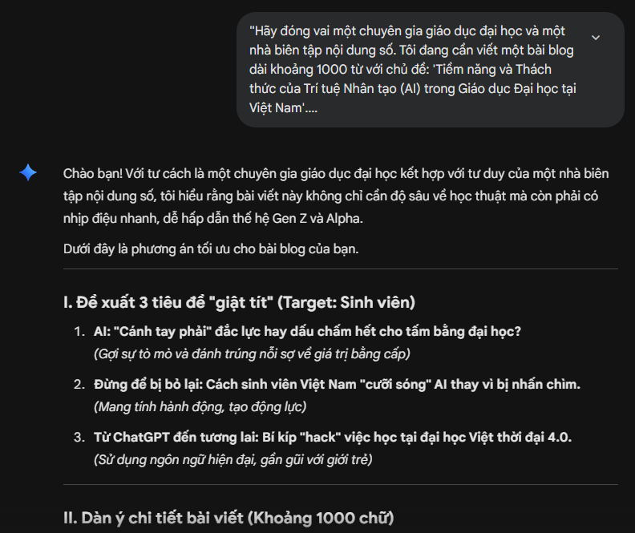
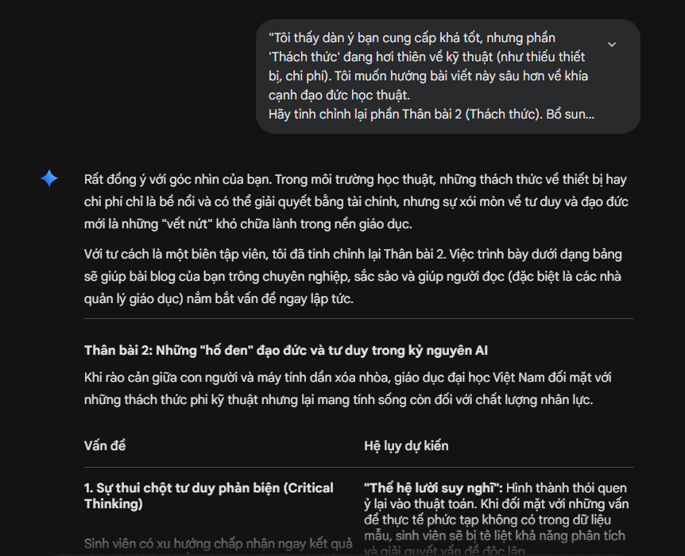
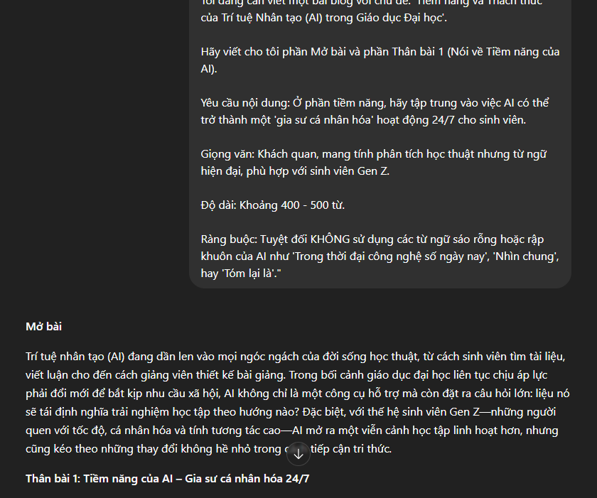
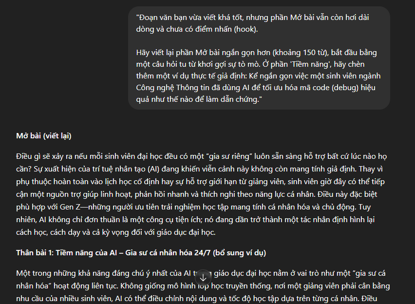
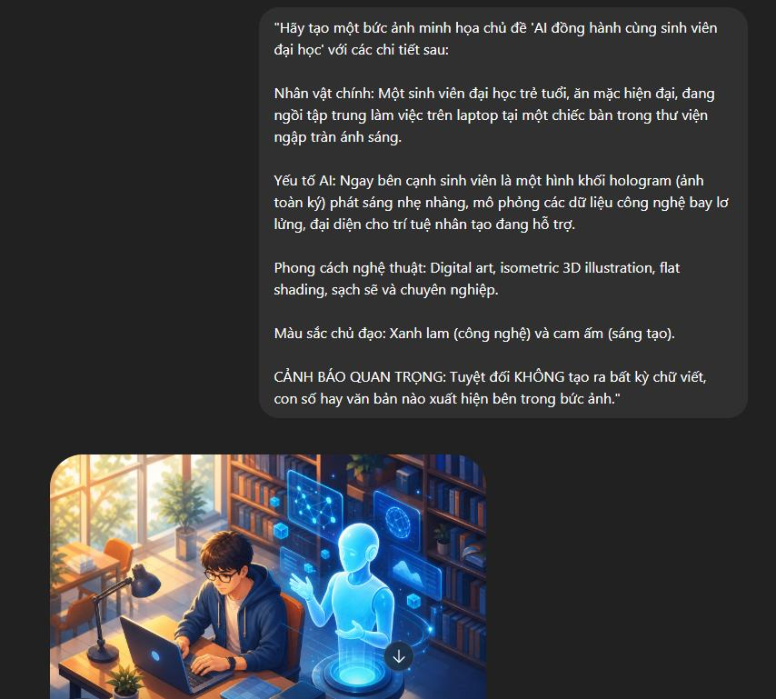

Tên dự án sản phẩm: Bài viết Blog/Bài báo phân tích: "Tiềm năng và Thách thức của Trí tuệ Nhân tạo trong Giáo dục Đại học".
Hình thức sản phẩm cuối cùng: Bài viết chuyên sâu (Article) kết hợp với hình ảnh minh họa số trực quan tạo bởi AI.
Hệ sinh thái 3 công cụ AI phối hợp:
Để đảm bảo sản phẩm đạt chất lượng xuất sắc và giữ vững vai trò làm chủ của con người (đóng góp cá nhân chiếm hơn 50%), quy trình thực hiện được chia làm 3 bước nghiêm ngặt:
Đóng góp can thiệp của cá nhân tôi: Sau khi nhận dàn ý từ Gemini, tôi nhận thấy cấu trúc của AI còn nặng tính lý thuyết chung chung. Tôi đã trực tiếp sửa đổi bằng cách thêm vào phần phân tích thực trạng sinh viên Việt Nam và chèn thêm góc nhìn về "Tính liêm chính học thuật/Vấn nạn đạo văn nhờ AI" để tăng tính thời sự.


Vần bản thô của ChatGPT sinh ra mắc lỗi lặp từ và hành văn bị "sặc mùi AI" (sử dụng quá nhiều từ cảm thán sáo rỗng). Tôi đã tiến hành biên tập lại hoàn toàn, cắt bỏ các đoạn lan man, bổ sung thuật ngữ chuyên ngành chính xác và trực tiếp viết tay các ví dụ thực tế dựa trên trải nghiệm học tập của bản thân tại UET để tạo tính thuyết phục sâu sắc.



Để minh bạch hóa quá trình đồng sáng tạo cùng AI, dưới đây là bảng phân bổ tỷ lệ đóng góp thực tế vào tác phẩm số cuối cùng:
| Hạng mục nội dung | Phần việc AI thực hiện | Phần việc Cá nhân trực tiếp can thiệp | Tỷ lệ cá nhân |
|---|---|---|---|
| Ý tưởng & Dàn ý | Gợi ý khung sườn cơ bản, phân chia các mục lớn. | Tái cấu trúc cốt truyện, đưa ngữ cảnh thực tế giáo dục đại học tại Việt Nam vào bài. | 50% |
| Biên soạn nội dung | Tạo bản dịch thô, mở rộng câu chữ dựa trên prompt. | Viết lại toàn bộ câu cú, loại bỏ văn phong máy móc, chèn ví dụ thực tế từ kinh nghiệm bản thân. | 60% |
| Thiết kế hình ảnh | Render hình ảnh theo mô tả. | Lên ý tưởng keyword kỹ thuật, viết prompt tiếng Anh chi tiết, lựa chọn và phối màu ảnh hài hòa với bài viết. | 50% |
Qua bài thực hành này, em nhận ra rằng AI tạo sinh là một trợ thủ đắc lực giúp giải phóng năng suất và kích hoạt sự sáng tạo, nhưng nó không thể thay thế tư duy phản biện và cảm xúc của con người. Một sản phẩm sáng tạo số chỉ thực sự có giá trị và đạt chuẩn đạo đức học thuật khi người dùng biết dùng tri thức của mình để dẫn dắt, kiểm soát và thổi "linh hồn" vào từng câu chữ mà AI tạo ra.